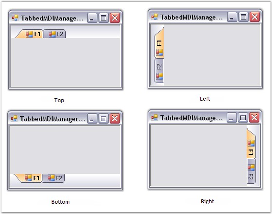

The tabs in the TabbedMDI layout can be aligned to the Top, Left, Right and Bottom of the form using the Alignment property. To access the Alignment property, you should use the TabControlAdded event. This event is fired to let the user configure the tab appearance and behavior.
5. Call the TabControlAdded event in the form's constructor.
|
[C#]
this.tb.TabControlAdded += new TabbedMDITabControlEventHandler(tb_TabControlAdded); |
|
[VB.NET]
AddHandler tb.TabControlAdded, AddressOf tb_TabControlAdded |
6. Set the Alignment property of Tab Control using the TabbedMDITabControlEventArgs.
|
[C#]
private void tb_TabControlAdded(object sender, TabbedMDITabControlEventArgs args) { args.TabControl.Alignment=TabAlignment.Bottom; } |
|
[VB.NET]
Private Sub tb_TabControlAdded(ByVal sender As Object, ByVal args As TabbedMDITabControlEventArgs) args.TabControl.Alignment = TabAlignment.Bottom End Sub |

Figure 1090: Tab Aligned To Top, Left, Bottom and Right
See Also